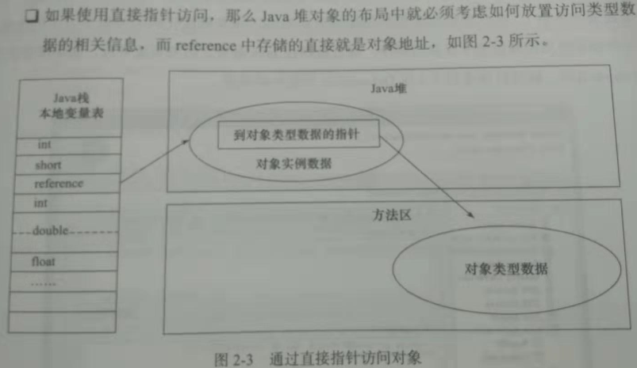
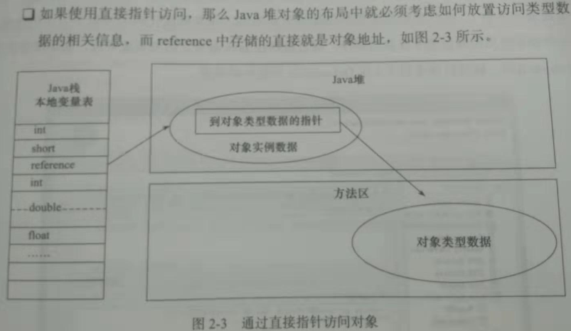

注意：参照深入理解java虚拟机 (推荐阅读：内容较为枯燥，适合静下心来，耐住性子品读)
第一章 走进java
-- 本章可不阅
1.跨平台：
一次编写，到处运行 (write once run anywhere)
2.openJDK与oracle JDK区别
openJDK 开源、oracle JDK 商用闭源
大致代码均公用，除了极少sun公司也无权开放的代码外，基本一致
第二部分 自动内存管理机制
第二章 java内存区域与内存溢出异常
1.内存动态分配、垃圾收集技术
2.虚拟机自动内存管理
->不容易出现内存泄露和内存溢出问题
->一旦出现内存泄露和溢出方面问题，如果不了解虚拟机如何使用内存，排查错误异常艰难
3.运行时数据区域
包括：方法区(Method Aera)、虚拟机栈(VM stack)、本地方法栈(native method stack)
堆(heap)、程序计数器(program counter register)
3.1小结：
程序计数器：程序执行位置的标志位(由于线程切换)
虚拟机栈：描述java方法执行的内存模型(栈帧[主要包含堆栈的栈内存]) (局部变量表：存储对象引用)
本地方法栈：HotSpot虚拟机使用的本地Native方法
java堆：唯一目的就是存放对象实例
方法区：(class类内元素)存储已被虚拟机加载的类信息、常量、静态变量、即时编译器编译后的代码等数据
4.程序计数器
4.1.区域 (注意)：
是一块较小的内存空间，此内存区域是唯一一个在java虚拟机规范中没有规定outOfMemoryError情况的区域
即：不会出现内存溢出现象，程序计数器的生命周期与线程相同
4.2.概念(是什么?)：
可以看做当前线程所执行的字节码的行号标志位
简单来讲就是程序执行位置的标志位(由于线程切换)
4.3.引申：
java虚拟机的多线程：通过线程轮流切换并分配处理器执行时间的方式来实现的
4.4.为何会出现“程序计数器”
任何一个确定的时刻，一个处理器(多核处理器指一个内核)都只会执行一条线程中的指令
为了线程切换后能够恢复到正确的执行位置，故每条线程都需要一个独立的程序计数器
且每条线程之间计数器互不影响，独立存储
4.5.字节码解释器
字节码解释器需要依赖程序计数器，改变程序计数器的值，来选取吓一跳需要执行的字节码指令
分支、循环、跳转、异常处理、线程恢复等
4.6.程序计数器记录的是什么
如果当前线程正在执行一个java方法：计数器记录的是正在执行的虚拟机字节码指令的地址
如果正在执行的是Native方法，这个计数器的值为空(undefined)
5.java虚拟机栈
5.1.生命周期
同程序计数器相同，线程私有，java虚拟机栈的生命周期与线程相同
5.2.描述对象(作用)
虚拟机栈描述的是java方法执行的内存模型
每个方法在执行的同时都会创建一个栈帧(stack frame)
栈帧：用于存储：局部变量表(堆栈的栈)、操作数栈、动态链接、方法出口等信息
每一个方法从调用直至执行完成，都对应着一个栈帧在虚拟机栈中从入栈到出栈的过程
5.3.栈帧概念
每一个方法运行的同时都会创建一个栈帧，结构为栈，联系为帧，方法调用方法，帧挨着帧，故为栈帧
5.3.java内存
大致可以分为堆内存(Heap)和栈内存(stack)，因为这两块内存区域与对象内存分配关系最为密切
而栈内存(stack)：指的就是运行时数据区域中虚拟机栈中的局部变量表部分
5.4.局部变量表：
存放了编译期间可知的8大基本数据类型(boolean、byte、char、short、int、float、long、double)
对象引用(reference类型)和returnAddress类型
5.5.局部变量表的大小
局部变量表所需的内存空间在编译期间完成分配，当进入一个方法时，
该方法需要在帧中分配多大的局部变量空间完全确定,且在方法运行期间不会改变局部变量表的大小
小结：方法运行期间，栈的大小不会改变，因为在编译期间已经固定
5.6.java虚拟机规范
第一种异常：当线程请求的栈深度大于虚拟机锁允许的深度，将抛出stackoverflowerror异常
第二种异常：当动态扩展的虚拟机，扩展是无法申请到足够的运行时内存，将抛出outofmemoryerror异常
6.本地方法栈
6.1.本地方法栈和虚拟机栈区别
虚拟机栈：为虚拟机执行java方法(字节码)服务
本地方法栈：为虚拟机使用到的Native方法服务
6.2.虚拟机规范
对本地方法栈中方法使用的语言、使用方式、数据结构并没有强制规定
比如：Sun HotSpot虚拟机直接将本地方法栈和虚拟机栈合二为一
所以和虚拟机栈一样，本地方法栈区域也会抛出stackoverflowerror和outofmemoryerror异常
6.3.HotSpot虚拟机栈
对于HotSpot虚拟机栈：将虚拟机栈和本地方法栈合二为一，所以-Xoss虽然是设置本地方法栈大小
但实际并无效果，栈容量只由-Xss参数设定
7.java堆
7.1.生命周期
java堆(java heap)是java虚拟机锁管理的内存中最大的一块
java堆被所有线程共享的一块内存区域，虚拟机启动时创建
7.2.作用
java堆内存区域的唯一目的就是存放对象实例，(不是所有)几乎所有的对象实例都在这里分配内存
7.3.java堆 ≈ GC堆
java堆是垃圾收集器管理的主要区域，因此很多时候也被称作GC堆
现在垃圾收集器基本都采用分代收集算法
7.4.小提示
无论如何划分java对的内存区域，都与存放的内容无关，无论哪个区域，存储的都是对象实例
进一步的划分的目的：是为了更好的回收内存，或者更快的分配内存
7.5.java虚拟机规范
java堆可以处理物理上不连续的内存空间，只要逻辑上是连续的即可
当前主流的虚拟机都是按照可扩展来实现的(通过-Xmx和-Xms控制)
如果堆内没有内存完成实例分配，并且堆也无法再扩展时，将会抛出outofmemoryerror错误
8.方法区
8.1.生命周期
方法区和java堆一样，是各个线程共享的内存区域
8.2.作用
存储已被虚拟机加载的类信息、常量、静态变量、即时编译器编译后的代码等数据
8.3.方法区 ≈ 非堆(Non-Heap)
8.4.方法区 ≈ 永久代
GC分代收集使用永久代来实现方法区，Hotspot虚拟机的垃圾收集器就可以像管理其他java堆一样
管理这部分内存，且能够省去专门为方法区编写内存管理代码，但是现在看来容易产生内存溢出问题
所以目前已有放弃永久代并逐步采用Native Memory来实现方法区的规划
8.5.方法区垃圾收集
和java堆一样不需要连续的内存和可以选择固定大小或者可扩展外，可以选择不实现垃圾收集
8.6.方法区的垃圾收集目标
主要是针对常量池的回收和堆类型的卸载(类型卸载条件较为苛刻)
8.7.java虚拟机规范
当方法区无法满足内存分配要求时，将抛出outmemoryerror异常
9.运行时常量池
9.1.从属
运行时常量池是方法区的一部分
9.2.作用
用于存放编译器生成的各种字面量和符号引用和直接引用
9.3.java虚拟机规范
由于从属与方法区，所以当常量池无法申请到足够的内存时会抛出outofmemoryerror异常
10.直接内存
10.1.从属
直接内存并不是虚拟机运行时数据区的一部分，也不是java虚拟机规范中定义的内存区域
10.2.直接内存与NIO之间的关系
10.3.内存限制
直接内存的分配并不会收到java堆大小的限制，但是既然是内存，
就会受到本机总内存(RAM以及SWAP交换分区)以及处理器寻址空间的限制
10.4.outofmemoryeror异常
由于不属于java虚拟机规范中定义的内存区域，所以不需要遵守java虚拟机规范
但是服务器管理员在设置虚拟机参数时，会根据实际内存设置-Xmx等参数，经常忽略直接内存
所以值得各个内存区域总和大于物理内存限制(物理内存和操作系统级别限制)，从而outofmemoryError
11.HotSpot虚拟机
11.1.环境
HotSpot虚拟机在java堆中对象分配、布局、访问过程
11.2.对象创建
11.1.1.创建语法
Animal animal = new Animal();
11.1.2.创建过程 (new)
当虚拟机遇到new关键字时
-->①类加载检查-->首先去检查这个指令的参数是否能在常量池中定位到一个类的符号引用
-->其次检查这个符号引用代表的类是否已被加载、解析、和初始化-->如果没有需要执行类加载过程
-->②分配对象内存-->接下来虚拟机将为新生对象分配内存，对象所需的内存大小在类加载完成后
便可以完全确定-->对象分配空间的任务≈把一块大小确定的内存从java堆中划分出来
-->划分区域，分两种情况
-->③指针碰撞-->如果java堆中内存是绝对规整的，所有用过的内存放一边，空闲的内存放另一边，
中间放着一个指针作为分界点的指示器,那所分配内存就是指针向空闲的那边挪动一段与对象大小相等的距离
-->④空闲列表-->如果java堆中内存并不是规整的，已使用的内存和空闲的内存相互交错，那就没有办法
进行指针碰撞了，虚拟机就必须维护一个列表，记录哪些内存块是可用的，在分配的时候从列表中找到一块
足够大的空间划分给对象实例，并更新列表上的记录
-->如何决定使用哪种分配方式
分配方式是由java堆是否规整决定，而java堆是否规整又由垃圾收集器是否带有压缩整理功能决定
一、使用seial、parnew等待compact过程的收集器时，系统采用的分配算法是指针碰撞
二、使用cms这种基于mark-sweep算法的收集器时，通常采用空闲列表
11.1.3.并发下分配内存空间的问题
一、虚拟机采用cas配上失败重试的方式保证更新操作的原子性
二、内存分配按照线程划分在不同的空间中进行，即每个线程在java堆中
预先分配一小块内存(本地线程分配缓冲TLAB)
虚拟机是否使用TLAB，可以通过-XX:+/-UseTLAB参数设置
-->⑤初始化-->内存分配完成后，虚拟机需要将分配到的内存空间都初始化为零值(不包括对象头)
初始化操作：保证了对象实例字段在java代码中可以不付出是指就可以直接使用
程序能访问到这些字段数据类型所对应的的零值
-->⑥最后虚拟机要对对象进行必要的设置，例如这个对象是哪个类的实例，如何才能找到类的元数据信息，
对象的哈希码，对象的GC粉黛年龄，是否启用偏向锁等信息(这些信息都是放在对象头中.....)
-->⑦此时一个对象已经产生了
11.3.对象的内存布局
11.3.1.区域分布 (类似于链表)
HotSpot虚拟机中，对象在内存中存储的布局可以分为3块区域：对象头、实例数据、对齐填充
11.3.2.对象头
11.3.2.1.第一部分
用于存储对象自身的运行时数据(哈希码(hashcode)、GC分代年龄、锁状态标志、线程持有的所
偏向线程ID、偏向时间戳)
11.3.2.2.第二部分
类型指针(对象指向他的类元数据的指针)，虚拟机通过这个指针来确定这个对象是哪个类的实例
查找对象的元数据信息并不一定要经过对象本身
如果对象是一个java数组，那么在对象头中还必须有一块用于记录数组长度的数据，因为虚拟机
可以通过普通java对象的元数据信息确定java对象的大小，但是从数组的元数据中却无法确定数组大小
11.3.3.实例数据
实例数据部分是对象真正存储的有效信息，也是在代码中所定义的不同类型的字段内容，无论父类继承还是自身属性
对象实例属性的存储顺序
会受到虚拟机分配策略参数和字段在java源码中定义顺序的影响
HotSpot虚拟机默认的分配策略为：longs/doubles、ints、shorts/chars、bytes/booleans、oop(普通对象引用)
从分配策略来看，相同宽度的字段总是被分配到一起，所以子类中较窄的变量可能和父类中变量并列
11.3.4.对齐填充
第三部分对齐填充并不是必然存在，仅仅作为占位符
由于HotSpot虚拟机的自动内存管理系统要求对象的大小必须是8字节的整数倍，所以当对象实例数据部分没有对齐
就需要通过对齐填充补全
11.4.对象的访问定位
11.4.1.使用对象
建立对象就是为了使用对象
java程序需要通过栈上的reference数据来操作堆上的具体对象，由于reference类型的java虚拟机规范中
只规定了一个指向对象的引用，并没有定义这个引用应该通过何种方式去定位、访问堆中的对象的具体位置，
所以对象的访问方式取决于虚拟机的实现
目前主流的对象访问方式
使用句柄、直接指针
一、使用句柄
java堆中将会划分一块内存来作为句柄池，reference中存储的就是对象的句柄地址，而句柄中包含了
对象实例数据与类型数据各自的具体地址信息
 二、直接指针
java堆对象的布局中就必须考虑如何放置类型数据的相关信息，reference中存储的直接就是对象地址

11.4.1.1.两种对象的访问方式区别
句柄：使用句柄最大的好处就是reference中存储的是未定的句柄地址，在对象被移动
(垃圾收集时移动对象是非常普遍的行为)时，只会改变句柄中的实例数据指针，而reference不需要修改
直接指针：直接指针最大的好处即使速度更快，它节省了一次指针定位的时间开销，由于对象的访问在java中
非常频繁，因此这类开销积少成多后也是一项非常可观的执行成本
对于HotSpot虚拟机而言，则是使用第二种方式进行对象访问，其他也有使用句柄来访问的
11.5.outofmemoryerror异常
简称：OOM
11.5.1.
java虚拟机规范中：除了程序计数器外，虚拟机内存的其他几个运行时数据区域都有可能发生OOM异常的可能
(java虚拟机栈、本地方法栈、java堆、方法区、运行时常量池、直接内存)均有可能
11.5.2.本章节目的
一、通过代码验证java虚拟机规范中描述的各个运行时区域存储的内容
二、希望在工作中遇到实际的内存溢出异常时，能够根据异常的信息快速判断哪个区域的内存溢出，知道什么样的代码
可能导致这些区域内存溢出，以及出现这些异常后该如何处理
三、对于OOM的研究，下面都是基于sun公司的HotSpot虚拟机，调试代码不要忽略-Xms/-Xmx/-Xmn这些参数
11.5.3.java堆溢出
一、如何造成java堆溢出
java堆用于存储对象实例，只要不断地创建对象，并且保证GC Roots到对象之间有可达路径来避免垃圾回收机制
清除这些对象，那么在对象数量达到最大堆的容量限制后就会产生内存溢出异常
二、具体代码
限制java堆大小为20M，不可扩展(将堆的最小值-Xms参数与最大值-Xmx参数设置为一样即可避免堆自动扩展)
public class HeapOOM {
static class OOM{}
public static void main(String [] args){
List
二、直接指针
java堆对象的布局中就必须考虑如何放置类型数据的相关信息，reference中存储的直接就是对象地址

11.4.1.1.两种对象的访问方式区别
句柄：使用句柄最大的好处就是reference中存储的是未定的句柄地址，在对象被移动
(垃圾收集时移动对象是非常普遍的行为)时，只会改变句柄中的实例数据指针，而reference不需要修改
直接指针：直接指针最大的好处即使速度更快，它节省了一次指针定位的时间开销，由于对象的访问在java中
非常频繁，因此这类开销积少成多后也是一项非常可观的执行成本
对于HotSpot虚拟机而言，则是使用第二种方式进行对象访问，其他也有使用句柄来访问的
11.5.outofmemoryerror异常
简称：OOM
11.5.1.
java虚拟机规范中：除了程序计数器外，虚拟机内存的其他几个运行时数据区域都有可能发生OOM异常的可能
(java虚拟机栈、本地方法栈、java堆、方法区、运行时常量池、直接内存)均有可能
11.5.2.本章节目的
一、通过代码验证java虚拟机规范中描述的各个运行时区域存储的内容
二、希望在工作中遇到实际的内存溢出异常时，能够根据异常的信息快速判断哪个区域的内存溢出，知道什么样的代码
可能导致这些区域内存溢出，以及出现这些异常后该如何处理
三、对于OOM的研究，下面都是基于sun公司的HotSpot虚拟机，调试代码不要忽略-Xms/-Xmx/-Xmn这些参数
11.5.3.java堆溢出
一、如何造成java堆溢出
java堆用于存储对象实例，只要不断地创建对象，并且保证GC Roots到对象之间有可达路径来避免垃圾回收机制
清除这些对象，那么在对象数量达到最大堆的容量限制后就会产生内存溢出异常
二、具体代码
限制java堆大小为20M，不可扩展(将堆的最小值-Xms参数与最大值-Xmx参数设置为一样即可避免堆自动扩展)
public class HeapOOM {
static class OOM{}
public static void main(String [] args){
List list = new ArrayList();
while(true){
list.add(new OOM())
}
//类似于 (无限循环)
for(;;){
list.add(new OOM())
}
}
}
运行结果：
java.lang.OutOfMemoryError:java heap space
三、如何应对
首先要判断到底是出现了内存泄露 (程序中已动态分配堆内存，由于某种原因未释放或无法释放) 还是内存溢出
内存泄露：
通过工具查看泄露对象到GC Roots的引用链，于是就能找到泄露对象是通过怎样的路径与GC Roots相关联
并导致垃圾收集器无法自动回收他们，掌握了泄露对象的类型信息及GC Roots引用链的信息，就可以
准确的定位出泄露代码的位置
内存溢出：
内存中的对象确实且必须还存活，那就应当检查虚拟机的堆参数(-Xmx/-Xms)，与机器物理内存对比看是否
还可以调大，从代码上检查是否存在某些对象生命周期过长，持有状态时间过长情况，尝试减少程序运行期
的内存消耗
11.5.4.虚拟机栈和本地方法栈溢出
一、如何造成虚拟机栈和本地方法栈溢出
1.如果线程请求的栈深度大于虚拟机锁允许的最大深度，将抛出stackoverflowerror异常
2.如果虚拟机在扩展栈时，无法申请到足够的内存空间，则抛出outofmemoryerror异常
3.以上两种情况，已使用栈空间太大或是内存空间太小，本质上都是对同一件事的两种描述?
二、如何产生
public class VMStackSOF{
private int stackLength = 1;
public void stackLeak(){
stackLength++;
stackLeak();
}
public static void main(String [] args) throws Throwable{
VMStackSOF oom = new VMStackSOF();
try{
oom.stackLeak();
}catch(Throwable e){
printf(“stack length："+oom.stackLength);
throw e;
}
}
}
三、结论
单个线程下，无论是由于栈帧太大还是虚拟机栈容量太小，当内存无法分配的时候，
虚拟机抛出的都是stackoverflowerror异常，多线程可以出现内存溢出 (案例省略)
四、注意
1.每个进程都有操作系统的内存限制(2G/32bit系统)
2.而运行时内存宽泛来说一共3部分：方法区、堆、程序计数器(忽略不计)、虚拟机栈+本地方法栈
其中一个内存溢出，可以调整其他内存区域的大小
11.5.5.方法区和运行时常量池溢出
一、阐释
由于运行时常量池是方法区的一部分，因此这两个区域的溢出测试放在一起进行
二、如何造成运行时常量池导致内存溢出
Strng.intern():如果常量池中有当前对象，则返回此对象，如果没有将此对象放置运行时常量池中
jdk1.7+将运行时常量池从永久代中去除
11.5.5.1.下面按照jdk1.6进行测试，只需要设置运行时常量池的大小，不断地向运行时常量池中存放元素即可
@Test
public void contextLoads() {
List oom = new ArrayList();
int i = 0;
for(;;){
oom.add(String.valueOf(i++).intern());
}
}
//结果
java.lang.outofmemoryerror:PermGen space
11.5.5.2.方法区用于存放class的相关信息：类名、访问修饰符、常量池、字段描述、方法描述等
基本思路就是运行时产生大量的类去填满方法区，直接方法区内存溢出
可以使用cglib等字节码技术实现，这里暂不举例
11.5.6.本地直接内存溢出
一、阐述
DirectMemory容量合一通过-XX：MaxDirectMemorySize指定，如果不指定
默认与java堆最大值(-Xmx指定)一样
二、如何使直接内存内存溢出
DirectByteBuffer分配内存也会抛出内存溢出异常，但是它抛出的异常并不是真正想操作系统申请
分配的内存，而是通过计算得知内存无法分配，可以使用unsafe.allocateMemory()真正申请分配
三、代码展示
private static final int _1G = 1024 * 1024 * 1024;
@Test
public void contextLoads() {
Field unsafeField = Unsafe.class.getDeclaredFields()[0];
unsafeField.setAccessible(true);
Unsafe unsafe = null;
try {
unsafe = (Unsafe)unsafeField.get(null);
for(;;){
unsafe.allocateMemory(_1G); //手动申请内存
}
} catch (IllegalAccessException e) {
e.printStackTrace();
}
}
四、鉴别是否为直接内存溢出
由DirectMemory直接内存导致的内存溢出，一个明显的特征就是在Heap Dump文件中不会看到
明显的异常，如果读者发现OOM后Dump文件很小，而程序中有直接或间接的使用了NIO，那就
可以考虑这方面原因了
11.5.7.本章小结
本章我们明白了：虚拟机内存如何划分，那部分区域，什么样的代码和操作可能导致内存溢出异常
虽然java有垃圾回收机制，但是内存溢出异常离我们并不遥远
第三章 垃圾收集器与内存分配策略
1.GC(垃圾收集)考虑的问题
1.1.那些内存需要回收
1.2.什么时候回收
1.3.如何回收
2.java哪些内存需要回收
程序计数器、虚拟机栈、本地方法栈的生命周期都是跟随线程，不需要考虑内存回收
java堆和方法区则不同：一个借口的多个实现类需要的内存可能不同、一个方法中的多个分支需要的内存也不一样
只有程序处于运行期间才知道内存的分配，故相应的回收也是动态的，垃圾收集器关注的是这部分内存
3.java什么时候回收内存
垃圾回收器，在对堆回收之前，第一件事情就是确定对象是否存活或者死去(即不可能再被任何途径使用的对象)
4.判断对象是否存活算法
4.1.引用计数算法
给对象添加一个引用计数器，每当有一个地方引用它时，计数器+1，当引用失效时，计数器-1
任何时刻当计数器=0的对象就是不可能再被使用的
4.2.引用计数算法为什么被废弃
主要原因在于它很难解决对象之间的相互循环引用的问题
如：A.instance = B 和 B.instance = A
4.3.可达性分析算法
4.3.1.如何为存活
当GC Roots到这个对象不可达，则证明此对象是不可用
对于二叉树而言，也就是当根节点与子节点之间，无关系绑定
4.3.2. GC Roots对象
可作为GC Roots对象的：
虚拟机栈(栈帧中的本地变量表)中引用的对象
方法区中类静态属性引用的对象
方法区中常量引用的对象
native方法引用的对象
5.引用
5.1.引用的分类
强引用、软引用、弱引用、虚引用
5.2.强引用
A a = new A()
类似这种，只要强引用还存在，垃圾收集器永远不会回收掉被引用的对象
5.3.软引用
用来描述一些还有用，但是并非必须的对象
在系统将要发生内存溢出异常之前，将这些对象裂锦回收范围中进行二次回收
5.4.弱引用
也是用来描述非必须对象，相对软引用对象稍弱
只能生存到下一次垃圾手机发生之前，无论当前内存是否足够，都会回收掉
5.5.虚引用
幽灵引用/幻影引用，最弱的一种引用关系
有虚引用关联不会影响回收，设置虚引用唯一目的就是在对象被回收时收到一个系统通知
6.如何回收
6.1.宣告一个对象死亡，需要经历两次标记过程
6.1.1.第一次标记
对象进行可达性分析算法之后发现没有与GC Roots相关联的引用链，则进行第一次标记
6.1.2.第二次标记
第一次标记之后还会进行一次筛选操作：
(条件) 此对象是否有必要执行finalize()方法 [对象逃脱回收哦命运的最后一次机会]
(是否有必要) 当对象没有覆盖finalize()方法、或者finalize()方法
已经被虚拟机执行过了[任何一个对象的dinalize()方法只会被系统自动调用一次]
虚拟机将这两种情况视为没有必要执行
一、有必要执行finalize()方法
对象将会被放置在一个叫做F-Queue队列，稍微虚拟机自动创建线程执行，但并不等待执行结果
如果程序执行缓慢、发生死循环、及其他极端情况可能导致队列中对象永久处于等待，甚至
甚至内存回收系统奔溃
如果对象在finalize()方法中成功解救自己(如：A = this) 二次标记会移除回收对象集合
二、没有必要执行finalize()方法
回收
7.回收方法区
7.1.方法区回收内容
废弃常量和无用的类
7.2.回收废弃常量
当前系统中没有任何地方引用这个常量，此时内存回收，也有可能清理出常量池
7.3.回收无用类 (条件较为苛刻)
1.该类的所有实例都已经被回收,java堆中不存在该类的任何实例
2.加载该类的classloader已经被回收
3.该类对应的class对象没有在任何地方被引用，无法再任何地方通过反射访问该方法
7.4.类的回收
最终是否进行类回收，HotSpot虚拟机提供了一系列参数控制
8.垃圾回收算法
8.1.标记-清除算法 (最基础的收集算法)
8.1.1.共有标记、清除两个阶段
1.标记：
通过引用计数或者可达性分析算法、知晓对象是否存活，从而进行标记
2.清除：
通过垃圾回收算法，进行清除
8.1.2.缺陷
1.效率：
标记和清除两个过程的效率都不高
2.空间问题：
标记清除后，会产生大量不连续的内存碎片
8.2.复制算法 (主要解决标记-清除算法效率问题)
8.2.1.思想
通过额外的内存区、复制“对象存放内存空间区中存活的对象”，将原来“对象存放内存空间区”清空
8.2.2.内存分配
HotSpot虚拟机默认一块Eden和两块Survivor、Eden:Survivor = 8:1
8.3.标记-整理算法 (主要解决复制算法在对象成活率较高时，较多的复制操作，效率变低)
8.3.1.思想
当产生随便花内存，所有存活的对象，向一端移动，然后清理掉末尾至结尾的标记对象内存
9.垃圾回收算法的使用
9.1.分代收集算法
当前垃圾收集大都采用“分代收集”算法，主要思想：根据对象存活周期的不同将内存划分为几块
一般将堆分为“新生代”和“老年代”
新生代：
每次垃圾收集时，都会发现大批对象死去，只有少量存活，一般使用：“复制算法”
老年代：
对象存活率高，且没有额外空间分配担保，一般使用“标记-清理算法”或者“标记-整理算法”
10.HotSpot算法实现
10.0.名词解释
1.串行回收
gc单线程内存回收，会暂停所有用户线程
2.并行回收
多个gc线程并行工作，用户线程是暂停的
3.并发回收
用户线程和gc线程同时执行(不一定并行，可能交替，宏观并行，微观串行)
不需要停顿用户线程(cms中用户线程还是要停顿的，不过时间比较短)
10.1.垃圾收集器 (重点)
注：
1.收集算法是内存回收的方法论、垃圾收集器就是内存回收的具体实现
2.如果两个收集器之间存在连线，就说明他们可以搭配使用
3.虽然下面是对各个收集器进行比较，但是并不是为了挑选一个最好的收集器
因为知道现在为止还没有最好的收集器的出现
10.2.serial收集器 (最基本、最悠久的收集器)
特点：
1.单线程收集器，只能使用一个cpu或者一条线程区完成垃圾收集
2.进行垃圾收集时，必须暂停掉其他所有的工作线程，直到收集结束
作用:
1.虚拟机运行在client模式下的默认新生代收集器
优点：
1.简单，单cpu情况，由于没有多线程交互开销，所以更加高效
10.3.parnew收集器 (serial收集器多线程版本)
作用：
1.server模式下的虚拟机中首选的新生代收集器
2.目前只有它可以和CMS收集器配合工作
10.4.名词解释
并行：
指多条垃圾收集线程并行工作，但此时用户线程仍处于等待状态
并发：
指用户线程与垃圾收集线程同时执行，但不一定是并行的，可能会交替执行
用户程序在继续运行，二垃圾收集器程序运行于另一个CPU上
吞吐量：
CPU用于运行用户代码的时间与CPU总消耗时间的比值
吞吐量= 运行用户代码时间/(运行用户代码时间+垃圾收集时间)
10.5.parallel scavenge收集器 (复制算法收集器)
关注点：
parallel scavenge收集器的目标是要达到一个可控制的吞吐量
cms等收集器目标尽可能缩短垃圾收集时用户线程的停顿时间
别名：
“吞吐量优先” 收集器
区别：
1.停顿时间越短，适合需要与用户交互的程序
2.高吞吐量则可以高效率的利用CPU时间，尽快完成程序的运算任务，适合后台计算
10.6.serial old收集器 (serial老年代版本)
算法：
标记-整理算法
意义：
给client模式下的虚拟机使用
10.7.parallel old收集器
唯一搭配：
新生代parallel scavenge收集器、老年代serial old收集器
10.8.CMS收集器 (并发低停顿收集器)
目的：
以获取最短回收停顿时间为目标的收集器
算法：
较为复杂的标记-清除算法
收集过程：
初始标记、并发标记、重新标记、并发清除
10.9.G1收集器
当今收集器技术发展最前沿成果之一
10.10.理解GC日志
33.125: [ GC [DefNew: 3324k->152k(3712k), 0.0025925 secs]]
GC发生时间(自虚拟机启动[秒]) GC/Full GC GC发生区域 GC前容量->GC后容量(总容量) GC占用时间
注意：
Full GC会导致stop the world
11.垃圾收集器参数
--略
12.内存分配和回收策略
12.1.自动内存管理
自动化解决两个问题：给对象分配内存 + 回收分配给对象的内存
12.2.内存的分配
内存的分配规则并不是固定的，取决于当前使用的哪一种垃圾收集器组合和虚拟机中相关的内存参数
前面已经讲过垃圾收集算法和垃圾收集器了、现在讲述内存分配
12.3.内存分配
1.对象优先在Eden (新生代)分配、当Eden区没有足够空间进行分配时、虚拟机将发起Minor GC
2.当GC后仍没有足够空间、通过“分配担保机制”提前转移到老年代去
12.4.Minor GC和Full GC区别
1.新生代GC (Minor GC)：指发生在新生代的垃圾收集、因为java对象大多具有朝生夕灭的特性、
所以Minor GC非常频繁、一般回收速度也比较快
2.老年代GC (Full GC)：指发生在老年代的GC、出现Full GC、经常会伴随着至少一次的Minor GC
(并不是绝对) Full GC的速度一般会比Minor GC慢10倍以上
12.5.大对象直接进入老年代
1.大对象
需要大量连续内存空间的java对象(很长的字符串以及数组)
具体的衡量有相应的配置参数
2.复习
新生代采用赋值算法、老年代采用标记-整理算法
13.长期存活的对象将进入老年代
13.1.内存管理思想
虚拟机采用了“分代收集”的思想来管理内存
13.2.对象年龄计算
对象在survivor区中每熬过一次Minor GC，年龄就增加一岁
当增加至阈值(默认15次)、将会经晋升到老年代
14.动态对象年龄判定
14.1.进入老年代的第二种途径
如果survivor空间中相同年龄所有对象大小的综合大于survivor空间的一半
年龄大于或等于该年龄的对象就可以直接进入老年代，无需等到阈值
15.空间分配担保(新生代和老年代的内存对象移动)
15.1.Minor GC动作
1.Minor GC之前、虚拟机会先检查老年代最大可用的连续空间是否大于新生代所有对象总空间
如果成立，则此次Minor GC是安全的
2.如果老年代空间不足、则会查看HandlePromontionFailure设置的值是否允许担保失败
一般是允许的，因为不允许的话会直接进行一次Full GC、担保开启、会继续检查老年代最大
可用的连续空间是否大于历次晋升到老年代对象的平均大小、是则进行Minor GC，否则Full GC
第四章、虚拟机性能监控与故障处理
16.1.主要工具 (/bin 目录下)
JConsole、visualVM
第五章、调优案例分析与实战
-- 略过
第六章 类文件结构
1.一次编写，到处运行
sun公司以及其他虚拟机提供商发布了许多可以运行在不同平台上的虚拟机，这些虚拟机都可以载入和执行
同一种平台无关的“字节码”，从而实现"一次编写，到处运行"
2，平台无惯性
2.1.实现语言的无关性的基础：虚拟机和字节码存储的格式(.class文件)
2.2.不仅仅java可以运行在java虚拟机上，scala等都可以
3.CLASS类文件结构
3.1.任何class文件都对应着一个类或接口的定义信息，但是
类或接口并不一定都得定义在文件中(可以通过类加载器直接生成)
3.2.Class文件是一组以8位字节为基础单位的二进制流
3.3.class文件中只有两种数据类型，无符号数和表、且没有扔个分隔符号
3.4.魔数
作用：确定这个文件是否为一个能被虚拟机接受的class文件
class文件的魔术值为：0xCAFEBABE (咖啡宝贝)
-- 其他略过
第七章 虚拟机类加载机制